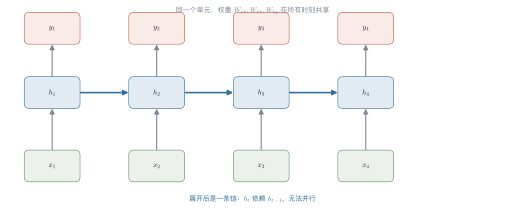
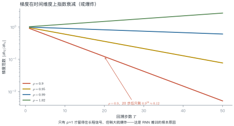
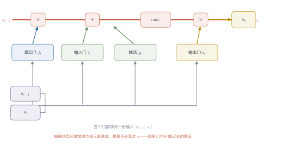
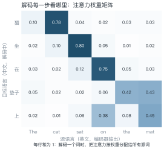

第 3 讲 神经序列建模¶
本讲位置
第 2 讲留下了三个死结：稀疏、短视、无组合泛化。本讲看神经网络怎么一个个解开——先解决稀疏（NNLM），再解决短视（RNN/LSTM），最后用注意力迈出通往 Transformer 的第一步。
📅 事实核查至 2026-11
本讲内容为 2003–2015 年的经典方法（NNLM、LSTM、seq2seq、Bahdanau 注意力），结论稳定。
学习目标¶
学完本讲，你应该能够：
- 说出 NNLM 如何用稠密向量解决 n-gram 的稀疏问题，并估算其参数量；
- 推导 BPTT 中梯度连乘的形式，解释梯度消失的数学原因；
- 说明 LSTM 的加法通路为什么能缓解梯度消失；
- 手算一次加性注意力的对齐权重，并解释它解决了 seq2seq 的什么瓶颈。
0 直觉：边读边记笔记¶
n-gram 的问题是"只看最近几个词"。人读句子不是这样的：你读到一个代词，会回头找它指代谁；读到转折词，会调整对整段的理解。
循环神经网络（RNN） 的做法很像记笔记：维护一个隐状态 \(h_t\)，每读一个词就更新一次：
这个 \(h_t\) 就是对"读到目前为止"的压缩摘要。它理论上能记住任意长的历史——只是"理论上"。
一句话总结
RNN 用一个不断更新的向量代替 n-gram 的固定窗口；LSTM 用门控决定记什么、忘什么；注意力用动态查询代替固定摘要。
1 NNLM：先解决稀疏¶
Bengio 等人 2003 年的神经概率语言模型（NNLM）结构很朴素：
- 每个词查表得到 \(d\) 维向量；
- 前 \(n-1\) 个词的向量拼接起来；
- 过一层 tanh 隐层；
- 接 softmax 输出词表上的分布。
关键变化：词与词之间的相似性由向量承载。训练语料里没见过"蓝色的猫"，但模型见过"红色的猫"和"蓝色的天空"，它能把两者的统计强度"借"过来。
例 3.1 算一下参数量¶
设词表 \(|V|=50{,}000\)，词向量维度 \(d=100\)，隐层 \(h=200\)，上下文 \(n=3\)（看前两个词）。
| 部件 | 形状 | 参数量 |
|---|---|---|
| 词嵌入表 | \(50{,}000\times100\) | \(5.0\times10^{6}\) |
| 输入到隐层 | \((2\times100)\times200\) | \(4.0\times10^{4}\) |
| 隐层到输出 | \(200\times50{,}000\) | \(1.0\times10^{7}\) |
| 合计 | \(\approx1.5\times10^{7}\) |
对比第 2 讲的 trigram：\(|V|^3=1.25\times10^{14}\) 个格子。参数少了七个数量级，而且没见过的组合也能给出非零概率。
从这个例子里能读出三件事
- 参数量的大头在输出层：\(200\times50{,}000\) 占了三分之二；后来的模型用权重绑定（tied embedding）把它省掉；
- 嵌入层是"共享统计强度"的载体：50 万个词共用 100 维空间，相似词自然靠拢；
- NNLM 仍然只看固定窗口——短视的问题没解决，这才轮到 RNN。
2 RNN：把窗口变成状态¶
2.1 结构¶
注意 \(\boldsymbol{W}_{hh}\) 在所有时间步共享——这正是 RNN 参数少的原因。

2.2 BPTT 与梯度消失¶
训练时要把误差沿时间反向传播（backpropagation through time，BPTT）。由链式法则：
这是 \(T-1\) 个矩阵的连乘。矩阵连乘的范数会随 \(T\) 指数变化：谱半径小于 1 就衰减到 0，大于 1 就爆炸。

2.3 两个常用变体¶
双向 RNN：把序列正着跑一遍、反着跑一遍，两个隐状态拼起来。这样每个位置都能同时看到左右上下文——BERT 的双向编码器就是这个思路的极端版本。
代价是：双向结构不能用于自回归生成，因为生成时右边还没出现。
深层 RNN：把多层 RNN 堆起来，底层学词法、高层学句法。实践中 2–4 层收益明显，再深就开始难训——这同样是梯度消失的锅。
例 3.2 手算梯度衰减¶
把 (3.2) 简化成标量情形 \(h_t=w\,h_{t-1}\)，则 \(\partial h_T/\partial h_1=w^{T-1}\)。
取 \(T=21\)（回溯 20 步）：
| \(w\) | \(w^{20}\) | 含义 |
|---|---|---|
| 0.90 | \(0.12\) | 梯度基本消失，学不到长程依赖 |
| 0.95 | \(0.36\) | 勉强能传 20 步 |
| 0.99 | \(0.82\) | 接近理想 |
| 1.01 | \(1.22\) | 开始放大 |
| 1.10 | \(6.73\) | 爆炸，训练发散 |
结论：\(w\) 从 0.99 变到 1.01，只差 2%，20 步后的梯度却相差 1.5 倍。RNN 对谱半径极其敏感，这是它难训的根本原因。
从这个例子里能读出两件事
- 梯度裁剪（gradient clipping）是必需品：把范数截到 1–5，能挡住爆炸但挡不住消失；
- 消失比爆炸更难治：爆炸会让 loss 变 NaN，你能立刻发现；消失只是"学不会长程依赖"，悄无声息。
3 LSTM：用门控换记忆¶
3.1 三个门¶
LSTM 在 RNN 基础上加了一条细胞状态 \(c_t\) 和三个门：

3.2 为什么加法通路有效¶
把 \(c_t=f_t\odot c_{t-1}+\cdots\) 展开：
梯度里出现的是门的连乘，而不是权重矩阵的连乘。门是 sigmoid 输出，取值在 \((0,1)\)；只要模型学会"这个信息重要"，它就可以把 \(f\) 保持在 0.99 附近，让梯度几乎无损地传回去。
换句话说：RNN 的衰减系数是固定的（由权重谱半径决定），LSTM 的衰减系数是可学的（由门控决定）。这是本质差别。
RNN 解决了"看得远"，但没解决"记得住"和"找得准"。下一个问题来自机器翻译——
4 seq2seq 与注意力¶
4.1 编码器-解码器¶
机器翻译需要"变长输入 → 变长输出"。序列到序列模型（sequence-to-sequence，seq2seq）用两个 RNN：编码器把源句压成一个向量 \(c\)，解码器从 \(c\) 出发逐词生成。
瓶颈：不管源句多长，都压进同一个 \(c\)。句子一长，信息必然丢失。
4.2 加性注意力¶
Bahdanau 等人的做法：不要压成一个向量，让解码器每一步自己决定看哪里。
- \(s_{i-1}\)：解码器上一步的状态（"我在找什么"）；
- \(h_j\)：编码器第 \(j\) 个位置的状态（"这里有什么"）；
- \(e_{ij}\)：两者匹配度；
- \(c_i\)：按权重加权得到的上下文向量。

例 3.3 手算一次对齐权重¶
解码某一步，三个源位置的匹配得分是 \(e=[2.0,\ 1.0,\ 0.1]\)。
第一步，取指数：
第二步，归一化：
第三步，加权求和。 设三个源向量为 \(h_1=(1,0)\)、\(h_2=(0,1)\)、\(h_3=(1,1)\)：
从这个例子里能读出三件事
- softmax 会放大差距：得分只差 1.9（2.0 与 0.1），归一化后的权重却差 6.7 倍（0.659 与 0.099）；
- 输出是"软对齐"：没有任何一个权重等于 1，模型同时看了三个位置；
- 这就是注意力的雏形——把 (3.4) 里的加性打分换成点积，就得到第 4 讲的缩放点积注意力。
5 并行性：RNN 的致命伤¶
RNN 的 \(h_t\) 依赖 \(h_{t-1}\)，训练时必须逐时间步串行。序列长度 1000，就要串行算 1000 次。
| 结构 | 序列上的并行度 | 任意两位置的距离 |
|---|---|---|
| RNN | 1（完全串行） | \(O(n)\) 步 |
| CNN | \(O(\log_k n)\)（堆叠空洞卷积） | \(O(\log_k n)\) 层 |
| Transformer | \(O(1)\)（一次算完） | \(O(1)\) 层 |
这两列数字就是 Transformer 取代 RNN 的全部理由：它同时解决了"不能并行"和"距离太远"两个问题。代价是 \(O(n^2)\) 的显存——第 13 讲会讲怎么省。
顺带说一句：卷积网络（CNN）也曾被用来做序列建模——用空洞卷积堆叠，感受野随层数指数增长，而且能并行。它的问题在于任意两位置的距离仍是 \(O(\log n)\) 层，要覆盖长文档就得堆很多层，深层又难训。
所以 2017 年之前的局面是：RNN 能记长程但慢，CNN 快但看得不够远。Transformer 把两者都解决了——一次注意力就让任意两位置直接相连。
import numpy as np
def rnn_forward(xs, W_hh, W_xh, h0=None):
"""最朴素的 RNN 前向：xs 形状 (T, d)，返回各时刻隐状态。"""
h = np.zeros(W_hh.shape[0]) if h0 is None else h0
hs = []
for x in xs: # 必须逐时间步，无法并行
h = np.tanh(W_hh @ h + W_xh @ x)
hs.append(h)
return np.array(hs)
def gradient_norm_decay(w: float, T: int) -> float:
"""标量情形的梯度范数：w^(T-1)"""
return w ** (T - 1)
print(f"{gradient_norm_decay(0.9, 21):.3f}") # 0.122，与例 3.2 一致
6 工程要点与坑¶
- 梯度裁剪必开：
clip_grad_norm_(params, 1.0)，否则一个异常样本就能让 loss 变 NaN。 - 初始化要正交：正交初始化能把谱半径控制在 1 附近，明显缓解消失。
- 反向传播截断：TBPTT（truncated BPTT）只回溯固定步数，省显存但会丢长程信号。
- packed sequence：变长 batch 要 pack，否则 padding 会污染隐状态。
- LSTM 不一定优于 GRU：门控循环单元（gated recurrent unit，GRU）参数少 25%，小数据上常常更好。
- 注意力要先 mask：padding 位置的得分必须置负无穷，否则会分到权重。
7 论文与延伸¶
| 年份 | 论文 | 一句话贡献 |
|---|---|---|
| 1997 | Hochreiter & Schmidhuber, Long Short-Term Memory | 门控 + 细胞状态 |
| 2003 | Bengio et al., A Neural Probabilistic Language Model | 稠密词向量解决稀疏 |
| 2014 | Sutskever et al., Sequence to Sequence Learning | 编码器-解码器 |
| 2014 | Bahdanau et al., Neural MT by Jointly Learning to Align and Translate | 加性注意力 |
| 2014 | Cho et al., Learning Phrase Representations using RNN Encoder–Decoder (GRU) | GRU |
| 2017 | Vaswani et al., Attention Is All You Need | 去掉循环 |
8 习题¶
🟢 概念题
- NNLM 与 n-gram 的参数规模差了几个数量级？差在哪里？
- 为什么说"LSTM 的衰减系数是可学的，RNN 的是固定的"？
🟡 推导题
- 从 (3.1) 出发推导 (3.2)，说明每个因子里 \(\operatorname{diag}(1-\tanh^2)\) 的作用。
- 把 (3.4) 的加性打分换成 \(\boldsymbol{q}^{\top}\boldsymbol{k}\)，写出对应的公式，并说明与第 4 讲 (L4.1) 的关系。
🔴 实现题
- 用 NumPy 实现一个单层 RNN 的前向与 BPTT，验证例 3.2 的梯度衰减。
- 在玩具翻译任务上比较"固定上下文向量"与"加性注意力"的 BLEU 差距。
9 本讲小结¶
三个公式
- RNN：\(h_t=\tanh(W_{hh}h_{t-1}+W_{xh}x_t)\)
- BPTT：\(\partial h_T/\partial h_1=\prod_t W_{hh}^{\top}\operatorname{diag}(1-\tanh^2)\)
- 注意力：\(\alpha_{ij}=\operatorname{softmax}(e_{ij})\)，\(c_i=\sum_j\alpha_{ij}h_j\)
三个结论
- 梯度消失的本质是矩阵连乘
- LSTM 用加法通路 + 可学门控换长程记忆
- RNN 的致命伤是时间步不能并行
一句话
RNN 把窗口变成状态，注意力把状态变成查询。
来源¶
- LSTM、NNLM、seq2seq、Bahdanau 注意力均为 1997–2014 年的经典工作，公式与结论稳定，核查日期 2026-11。